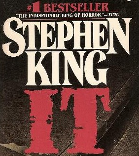

<!DOCTYPE html>
<html lang="en">
<head>
    <meta charset="UTF-8">
    <meta http-equiv="X-UA-Compatible" content="IE=edge">
    <meta name="viewport" content="width=device-width, initial-scale=1.0">
    <link rel="stylesheet" href="css/styles.css" />
    <script src="js/main.js" defer></script>
    <title>T.O.P Library</title>
</head>
<body>
    <main class="main">

        <div class="books-container" id="booksContainer">
            <!-- 
            <div class="book">

                <div class="book-top">
                    
                    <div class="book-info">
                        <div>
                            Title: <span class="book-info-title">IT</span>
                        </div>
                        <div>
                            Author: <span class="book-info-author">Stephen King</span>
                        </div>
                        <div>
                            Pages: <span class="book-info-pages">45</span>
                        </div>
                        <div>
                            Year: <span class="book-info-year">1986</span>
                        </div>
                        <div>
                            Genre: <span class="book-info-genre">Horror</span>
                        </div>
                    </div>
                </div>
                <div class="book-bottom">
                    <p class="book-info-synopsis">
                        IT is the 22nd book published by Stephen King. It was his 18th novel, and the 13th novel written under his own name. The book was released by Viking on September 15, 1986. It was one of the best selling novels in the United States of that year and is now considered a "modern masterpiece" of the horror genre in literature.
                    </p>
                </div>

            </div>
            -->
        </div>

    </main>
</body>
</html>